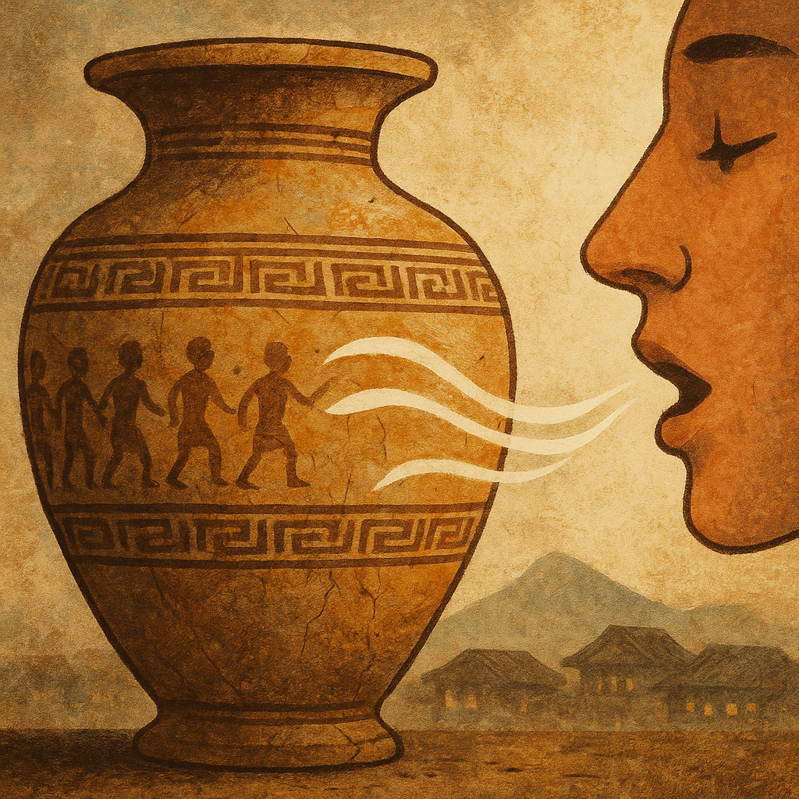
A mouth speaking through time like an ancient urn telling stories.
口 + 十
On: コ ・ Kun: ふる(い)
💡

↑ Back to Top
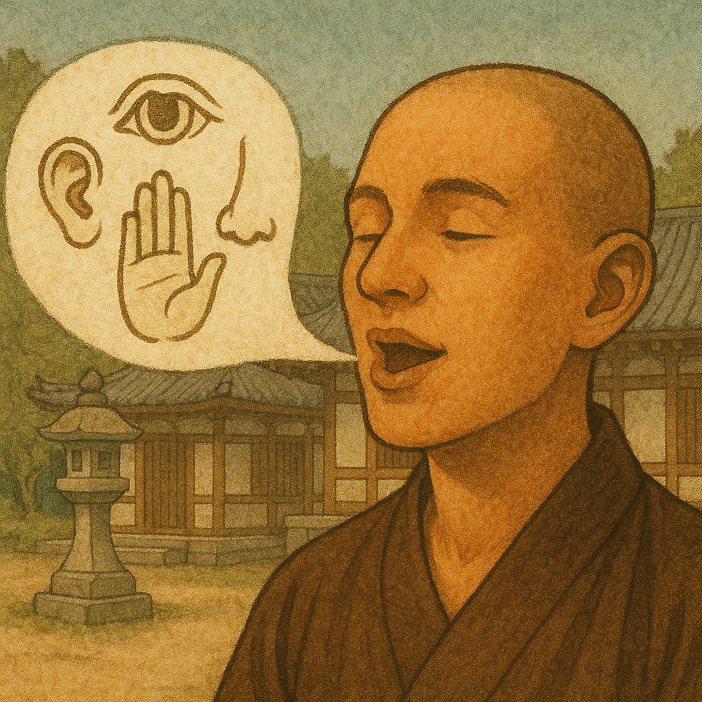
Mouth over five lines — "I" speak for all five senses.
五 + 口
On: ゴ ・ Kun: われ／あれ／わが
💡
↑ Back to Top
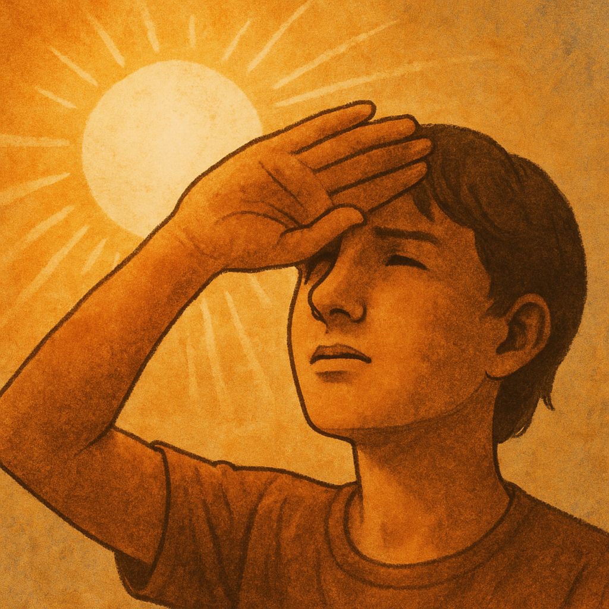
The sun over your eyes — you risk looking at it.
日 + 目
On: ボウ ・ Kun: おか(す)
💡
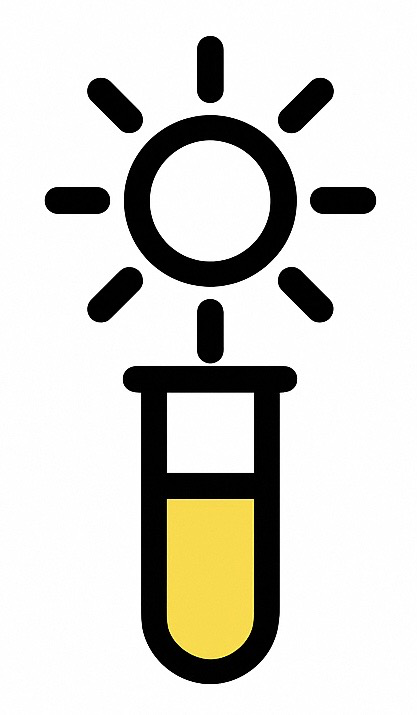
↑ Back to Top
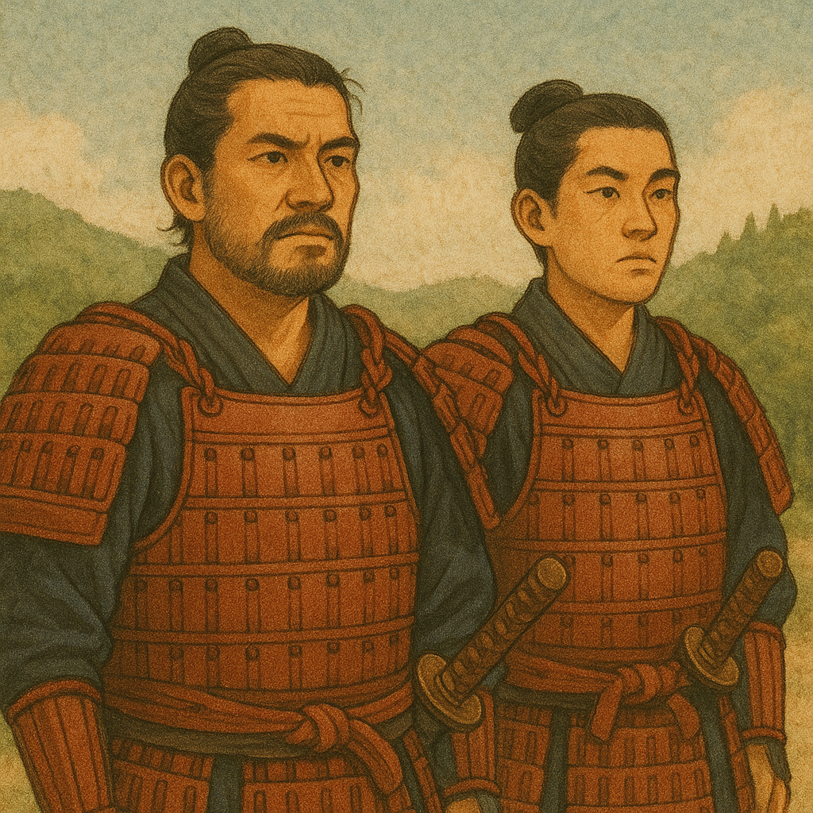
Two moons, side by side — companions see the world together.
月 + 月
On: ホウ ・ Kun: とも
💡
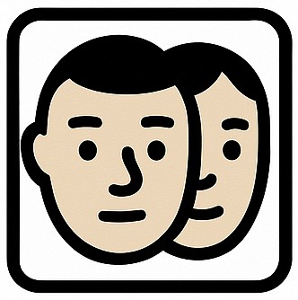
↑ Back to Top
The sun and moon together — brightness that lights the world.
日 + 月
On: メイ ・ Kun: あか(るい)、あき(らか)
💡

↑ Back to Top
One mouth under two suns — chanting to the light.
口 + 日 + 日
On: ショウ ・ Kun: とな(える)
💡

↑ Back to Top
Three suns stacked — maximum sparkle.
日 + 日 + 日
On: ショウ ・ Kun: あき(らか)
💡

↑ Back to Top
Three mouths — buy, sell, open!
口 + 口 + 口
On: ヒン ・ Kun: しな
💡

↑ Back to Top
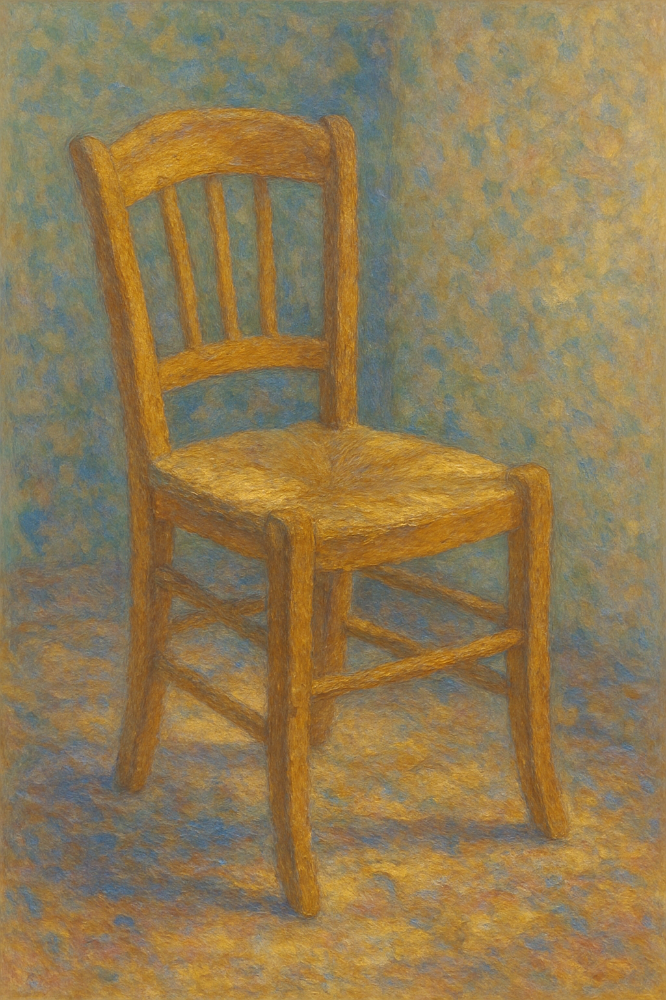ke "
Take a seat in the chair and rest your spine.
口 + 口
On: ロ
💡
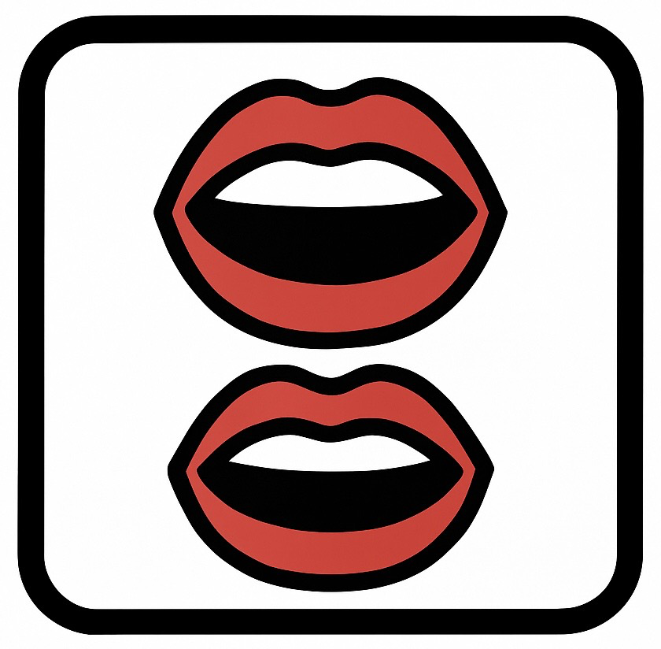
↑ Back to Top
Two suns shining together — a symbol of flourishing light.
日 + 日
On: ショウ ・ Kun: さか(ん)
💡
↑ Back to Top
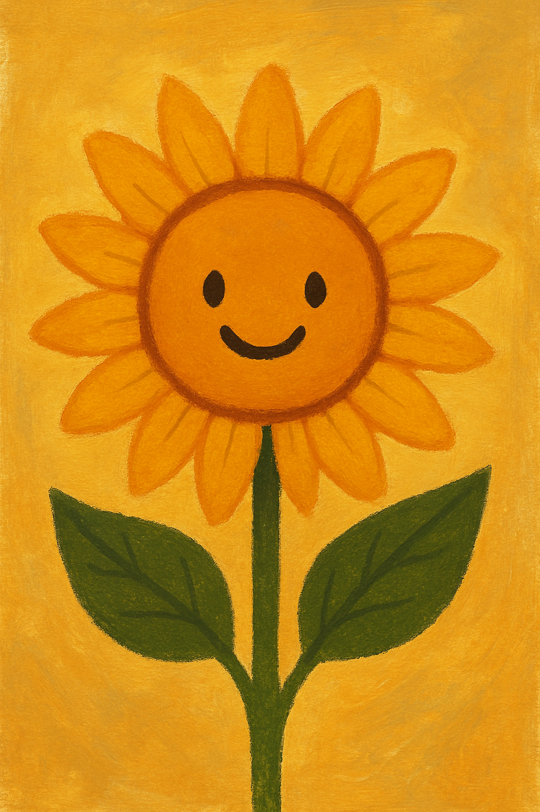
Sun over a needle — a sunflower up early.
日 + 十
On: ソウ／サツ ・ Kun: はや(い)
💡

↑ Back to Top
This kanji shows the sun rising (日) and nine (九) — but the reason for "nine" is
here was to determine the original pronunciation, rather than for meaning. So for us here,
we take the same idea and use "beer" to give us the pronunciation: Think of Asahi Beer, and you’ll never forget that 旭 is pronounced like “Asahi” and means the rising sun.
日 + 九
On: キョク ・ Kun: あさひ
💡

↑ Back to Top
Three lines through the world — past, present, future.
一 + 三 horizontal strokes
On: セイ ・ Kun: よ
💡
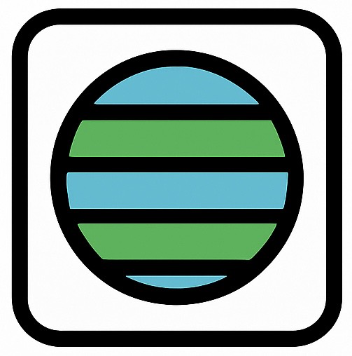
↑ Back to Top
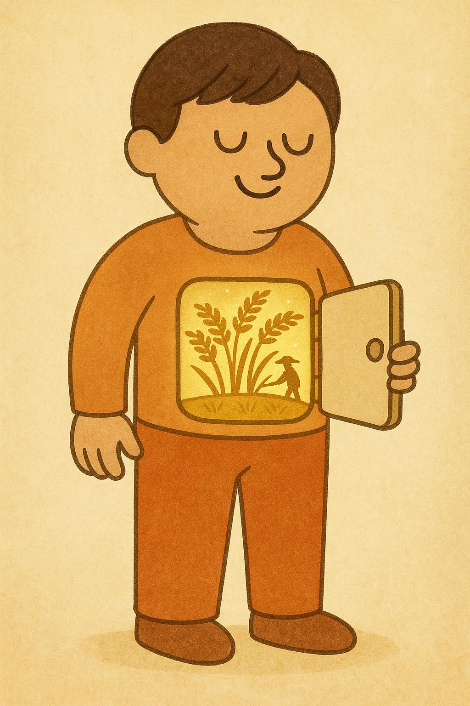
Rice field on flesh — your body’s food field.
Inside your stomach is not just food, but a whole glowing rice field!
月 (flesh) + 田
On: イ
💡
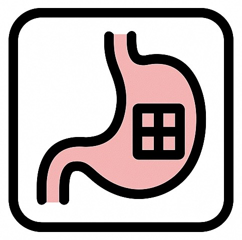
↑ Back to Top
The sun peeking over the horizon — dawn begins.
日 + 一
On: タン ・ Kun: あさ
💡

↑ Back to Top
Moon (body part) + Nightbreak — eating a pizza late at night is risky for your gallbladder!
月 + 旦
On: タン ・ Kun: きも
💡
↑ Back to Top
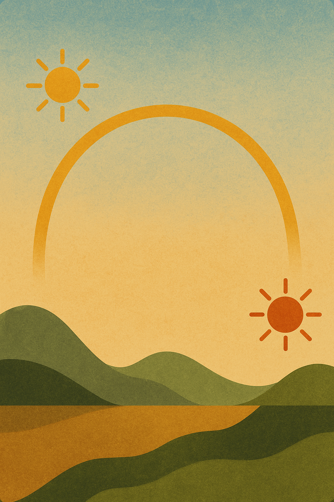
The span of the day — sun rises and sets.
日 + 一
On: コウ ・ Kun: わた(る)
💡

↑ Back to Top
It’s a dent. End of story.
(pictorial)
On: オウ ・ Kun: へこ(む)
💡

↑ Back to Top
 I
I
 Risk
Risk
 Companion
Companion

 Goods
Goods
 Spine ("Chair")
Spine ("Chair")
 Early
Early
 Nightbreak
Nightbreak
 Gallbladder
Gallbladder
 Span
Span
 Convex
Convex